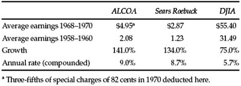

T his chapter will begin with two pieces of advice to the investor that cannot avoid being contradictory in their implications. The first is: Don’t take a single year’s earnings seriously. The second is: If you do pay attention to short-term earnings, look out for booby traps in the per-share figures. If our first warning were followed strictly the second would be unnecessary. But it is too much to expect that most shareholders can relate all their common-stock decisions to the long-term record and the long-term prospects. The quarterly figures, and especially the annual figures, receive major attention in financial circles, and this emphasis can hardly fail to have its impact on the investor’s thinking. He may well need some education in this area, for it abounds in misleading possibilities.
As this chapter is being written the earnings report of Aluminum Company of America (ALCOA) for 1970 appears in the Wall Street Journal. The first figures shown are
| 1970 | 1969 | |
| Share earnings a | $5.20 | $5.58 |
The little a at the outset is explained in a footnote to refer to “primary earnings,” before special charges. There is much more footnote material; in fact it occupies twice as much space as do the basic figures themselves.
For the December quarter alone, the “earnings per share” are given as $1.58 in 1970 against $1.56 in 1969.
The investor or speculator interested in ALCOA shares, reading those figures, might say to himself: “Not so bad. I knew that 1970 was a recession year in aluminum. But the fourth quarter shows a gain over 1969, with earnings at the rate of $6.32 per year. Let me see. The stock is selling at 62. Why, that’s less than ten times earnings. That makes it look pretty cheap, compared with 16 times for International Nickel, etc., etc.”
But if our investor-speculator friend had bothered to read all the material in the footnote, he would have found that instead of one figure of earnings per share for the year 1970 there were actually four, viz.:
| 1970 | 1969 | |
| Primary earnings | $5.20 | $5.58 |
| Net income (after special charges) | 4.32 | 5.58 |
| Fully diluted, before special charges | 5.01 | 5.35 |
| Fully diluted, after special charges | 4.19 | 5.35 |
For the fourth quarter alone only two figures are given:
| Primary earnings | $1.58 | $1.56 |
| Net income (after special charges) | .70 | 1.56 |
What do all these additional earnings mean? Which earnings are true earnings for the year and the December quarter? If the latter should be taken at 70 cents—the net income after special charges—the annual rate would be $2.80 instead of $6.32, and the price 62 would be “22 times earnings,” instead of the 10 times we started with.
Part of the question as to the “true earnings” of ALCOA can be answered quite easily. The reduction from $5.20 to $5.01, to allow for the effects of “dilution,” is clearly called for. ALCOA has a large bond issue convertible into common stock; to calculate the “earning power” of the common, based on the 1970 results, it must be assumed that the conversion privilege will be exercised if it should prove profitable to the bondholders to do so. The amount involved in the ALCOA picture is relatively small, and hardly deserves detailed comment. But in other cases, making allowance for conversion rights—and the existence of stock-purchase warrants—can reduce the apparent earnings by half, or more. We shall present examples of a really significant dilution factor below (page 411). (The financial services are not always consistent in their allowance for the dilution factor in their reporting and analyses.) *
Let us turn now to the matter of “special charges.” This figure of $18,800,000, or 88 cents per share, deducted in the fourth quarter, is not unimportant. Is it to be ignored entirely, or fully recognized as an earnings reduction, or partly recognized and partly ignored? The alert investor might ask himself also how does it happen that there was a virtual epidemic of such special charge-offs appearing after the close of 1970, but not in previous years? Could there possibly have been some fine Italian hands † at work with the accounting—but always, of course, within the limits of the permissible? When we look closely we may find that such losses, charged off before they actually occur, can be charmed away, as it were, with no unhappy effect on either past or future “primary earnings.” In some extreme cases they might be availed of to make subsequent earnings appear nearly twice as large as in reality—by a more or less prestidigitous treatment of the tax credit involved.
In dealing with ALCOA’s special charges, the first thing to establish is how they arose. The footnotes are specific enough. The deductions came from four sources, viz.:
All of these items are related to future costs and losses. It is easy to say that they are not part of the “regular operating results” of 1970—but if so, where do they belong? Are they so “extraordinary and nonrecurring” as to belong nowhere? A widespread enterprise such as ALCOA, doing a $1.5 billion business annually, must have a lot of divisions, departments, affiliates, and the like. Would it not be normal rather than extraordinary for one or more to prove unprofitable, and to require closing down? Similarly for such things as a contract to build a wall. Suppose that any time a company had a loss on any part of its business it had the bright idea of charging it off as a “special item,” and thus reporting its “primary earnings” per share so as to include only its profitable contracts and operations? Like King Edward VII’s sundial, that marked only the “sunny hours.” *
The reader should note two ingenious aspects of the ALCOA procedure we have been discussing. The first is that by anticipating future losses the company escapes the necessity of allocating the losses themselves to an identifiable year. They don’t belong in 1970, because they were not actually taken in that year. And they won’t be shown in the year when they are actually taken, because they have already been provided for. Neat work, but might it not be just a little misleading?
The ALCOA footnote says nothing about the future tax saving from these losses. (Most other statements of this sort state specifically that only the “after-tax effect” has been charged off.) If the ALCOA figure represents future losses before the related tax credit, then not only will future earnings be freed from the weight of these charges (as they are actually incurred), but they will be increased by a tax credit of some 50% thereof. It is difficult to believe that the accounts will be handled that way. But it is a fact that certain companies which have had large losses in the past have been able to report future earnings without charging the normal taxes against them, in that way making a very fine profits appearance indeed—based paradoxically enough on their past disgraces. (Tax credits resulting from past years’ losses are now being shown separately as “special items,” but they will enter into future statistics as part of the final “net-income” figure. However, a reserve now set up for future losses, if net of expected tax credit, should not create an addition of this sort to the net income of later years.)
The other ingenious feature is the use by ALCOA and many other companies of the 1970 year-end for making these special charge-offs. The stock market took what appeared to be a blood bath in the first half of 1970. Everyone expected relatively poor results for the year for most companies. Wall Street was now anticipating better results in 1971, 1972, etc. What a nice arrangement, then, to charge as much as possible to the bad year, which had already been written off mentally and had virtually receded into the past, leaving the way clear for nicely fattened figures in the next few years! Perhaps this is good accounting, good business policy, and good for management-shareholder relationships. But we have lingering doubts.
The combination of widely (or should it be wildly?) diversified operations with the impulse to clean house at the end of 1970 has produced some strange-looking footnotes to the annual reports. The reader may be amused by the following explanation given by a New York Stock Exchange company (which shall remain unnamed) of its “special items” aggregating $2,357,000, or about a third of the income before charge-offs: “Consists of provision for closing Spalding United Kingdom operations; provision for reorganizational expenses of a division; costs of selling a small babypants and bib manufacturing company, disposing of part interest in a Spanish car-leasing facility, and liquidation of a ski-boot operation.” *
Years ago the strong companies used to set up “contingency reserves” out of the profits of good years to absorb some of the bad effects of depression years to come. The underlying idea was to equalize the reported earnings, more or less, and to improve the stability factor in the company’s record. A worthy motive, it would seem; but the accountants quite rightly objected to the practice as misstating the true earnings. They insisted that each year’s results be presented as they were, good or bad, and the shareholders and analysts be allowed to do the averaging or equalizing for themselves. We seem now to be witnessing the opposite phenomenon, with everyone charging off as much as possible against forgotten 1970, so as to start 1971 with a slate not only clean but specially prepared to show pleasing per-share figures in the coming years.
It is time to return to our first question. What then were the true earnings of ALCOA in 1970? The accurate answer would be: The $5.01 per share, after “dilution,” less that part of the 82 cents of “special charges” that may properly be attributed to occurrences in 1970. But we do not know what that portion is, and hence we cannot properly state the true earnings for the year. The management and the auditors should have given us their best judgment on this point, but they did not do so. And furthermore, the management and the auditors should have provided for deduction of the balance of these charges from the ordinary earnings of a suitable number of future years—say, not more than five. This evidently they will not do either, since they have already conveniently disposed of the entire sum as a 1970 special charge.
The more seriously investors take the per-share earnings figures as published, the more necessary it is for them to be on their guard against accounting factors of one kind and another that may impair the true comparability of the numbers. We have mentioned three sorts of these factors: the use of special charges, which may never be reflected in the per-share earnings, the reduction in the normal income-tax deduction by reason of past losses, and the dilution factor implicit in the existence of substantial amounts of convertible securities or warrants. 1 A fourth item that has had a significant effect on reported earnings in the past is the method of treating depreciation—chiefly as between the “straight-line” and the “accelerated” schedules. We refrain from details here. But as an example current as we write, let us mention the 1970 report of Trane Co. This firm showed an increase of nearly 20% in per-share earnings over 1969—$3.29 versus $2.76—but half of this came from returning to the older straight-line depreciation rates, less burdensome on earnings than the accelerated method used the year before. (The company will continue to use the accelerated rate on its income-tax return, thus deferring income-tax payments on the difference.) Still another factor, important at times, is the choice between charging off research and development costs in the year they are incurred or amortizing them over a period of years. Finally, let us mention the choice between the FIFO (first-in-first-out) and LIFO (last-in-first-out) methods of valuing inventories. *
An obvious remark here would be that investors should not pay any attention to these accounting variables if the amounts involved are relatively small. But Wall Street being as it is, even items quite minor in themselves can be taken seriously. Two days before the ALCOA report appeared in the Wall Street Journal, the paper had quite a discussion of the corresponding statement of Dow Chemical. It closed with the observation that “many analysts” had been troubled by the fact that Dow had included a 21-cent item in regular profits for 1969, instead of treating it as an item of “extraordinary income.” Why the fuss? Because, evidently, evaluations of Dow Chemical involving many millions of dollars in the aggregate seemed to depend on exactly what was the percentage gain for 1969 over 1968—in this case either 9% or 4½%. This strikes us as rather absurd; it is very unlikely that small differences involved in one year’s results could have any bearing on future average profits or growth, and on a conservative, realistic valuation of the enterprise.
By contrast, consider another statement also appearing in January 1971. This concerned Northwest Industries Inc.’s report for 1970. * The company was planning to write off, as a special charge, not less than $264 million in one fell swoop. Of this, $200 million represents the loss to be taken on the proposed sale of the railroad subsidiary to its employees and the balance a write-down of a recent stock purchase. These sums would work out to a loss of about $35 per share of common before dilution offsets, or twice its then current market price. Here we have something really significant. If the transaction goes through, and if the tax laws are not changed, this loss provided for in 1970 will permit Northwest Industries to realize about $400 million of future profits (within five years) from its other diversified interests without paying income tax thereon. * What will then be the real earnings of that enterprise; should they be calculated with or without provision for the nearly 50% in income taxes which it will not actually have to pay? In our opinion, the proper mode of calculation would be first to consider the indicated earning power on the basis of full income-tax liability, and to derive some broad idea of the stock’s value based on that estimate. To this should be added some bonus figure, representing the value per share of the important but temporary tax exemption the company will enjoy. (Allowance must be made, also, for a possible large-scale dilution in this case. Actually, the convertible preferred issues and warrants would more than double the outstanding common shares if the privileges are exercised.)
All this may be confusing and wearisome to our readers, but it belongs in our story. Corporate accounting is often tricky; security analysis can be complicated; stock valuations are really dependable only in exceptional cases. † For most investors it would be probably best to assure themselves that they are getting good value for the prices they pay, and let it go at that.
Use of Average Earnings
In former times analysts and investors paid considerable attention to the average earnings over a fairly long period in the past—usually from seven to ten years. This “mean figure” * was useful for ironing out the frequent ups and downs of the business cycle, and it was thought to give a better idea of the company’s earning power than the results of the latest year alone. One important advantage of such an averaging process is that it will solve the problem of what to do about nearly all the special charges and credits. They should be included in the average earnings. For certainly most of these losses and gains represent a part of the company’s operating history. If we do this for ALCOA, the average earnings for 1961–1970 (ten years) would appear as $3.62 and for the seven years 1964–1970 as $4.62 per share. If such figures are used in conjunction with ratings for growth and stability of earnings during the same period, they could give a really informing picture of the company’s past performance.
Calculation of the Past Growth Rate
It is of prime importance that the growth factor in a company’s record be taken adequately into account. Where the growth has been large the recent earnings will be well above the seven-or ten-year average, and analysts may deem these long-term figures irrelevant. This need not be the case. The earnings can be given in terms both of the average and the latest figure. We suggest that the growth rate itself be calculated by comparing the average of the last three years with corresponding figures ten years earlier. (Where there is a problem of “special charges or credits” it may be dealt with on some compromise basis.) Note the following calculation for the growth of ALCOA as against that of Sears Roebuck and the DJIA group as a whole.
Comment: These few figures could be made the subject of a long discussion. They probably show as well as any others, derived by elaborate mathematical treatment, the actual growth of earnings for the long period 1958–1970. But how relevant is this figure, generally considered central in common-stock valuations, to the case of ALCOA? Its past growth rate was excellent, actually a bit better than that of acclaimed Sears Roebuck and much higher than that of the DJIA composite. But the market price at the beginning of 1971 seemed to pay no attention to this fine performance. ALCOA sold at only 11½ times the recent three-year average, while Sears sold at 27 times and the DJIA itself at 15+ times. How did this come about? Evidently Wall Street has fairly pessimistic views about the future course of ALCOA’s earnings, in contrast with its past record. Surprisingly enough, the high price for ALCOA was made as far back as 1959. In that year it sold at 116, or 45 times its earnings. (This compares with a 1959 adjusted high price of 25½ for Sears Roebuck, or 20 times its then earnings.) Even though ALCOA’s profits did show excellent growth thereafter, it is evident that in this case the future possibilities were greatly overestimated in the market price. It closed 1970 at exactly half of the 1959 high, while Sears tripled in price and the DJIA moved up nearly 30%.
TABLE 12-1

It should be pointed out that ALCOA’s earnings on capital funds * had been only average or less, and this may be the decisive factor here. High multipliers have been maintained in the stock market only if the company has maintained better than average profitability.
Let us apply at this point to ALCOA the suggestion we made in the previous chapter for a “two-part appraisal process.” * Such an approach might have produced a “past-performance value” for ALCOA of 10% of the DJIA, or $84 per share relative to the closing price of 840 for the DJIA in 1970. On this basis the shares would have appeared quite attractive at their price of 57¼.
To what extent should the senior analyst have marked down the “past-performance value” to allow for adverse developments that he saw in the future? Frankly, we have no idea. Assume he had reason to believe that the 1971 earnings would be as low as $2.50 per share—a large drop from the 1970 figure, as against an advance expected for the DJIA. Very likely the stock market would take this poor performance quite seriously, but would it really establish the once mighty Aluminum Company of America as a relatively unprofitable enterprise, to be valued at less than its tangible assets behind the shares? † (In 1971 the price declined from a high of 70 in May to a low of 36 in December, against a book value of 55.)
ALCOA is surely a representative industrial company of huge size, but we think that its price-and-earnings history is more unusual, even contradictory, than that of most other large enterprises. Yet this instance supports to some degree, the doubts we expressed in the last chapter as to the dependability of the appraisal procedure when applied to the typical industrial company.